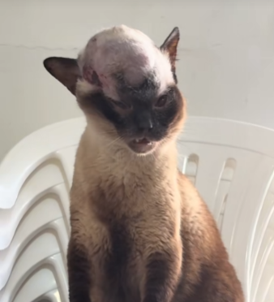
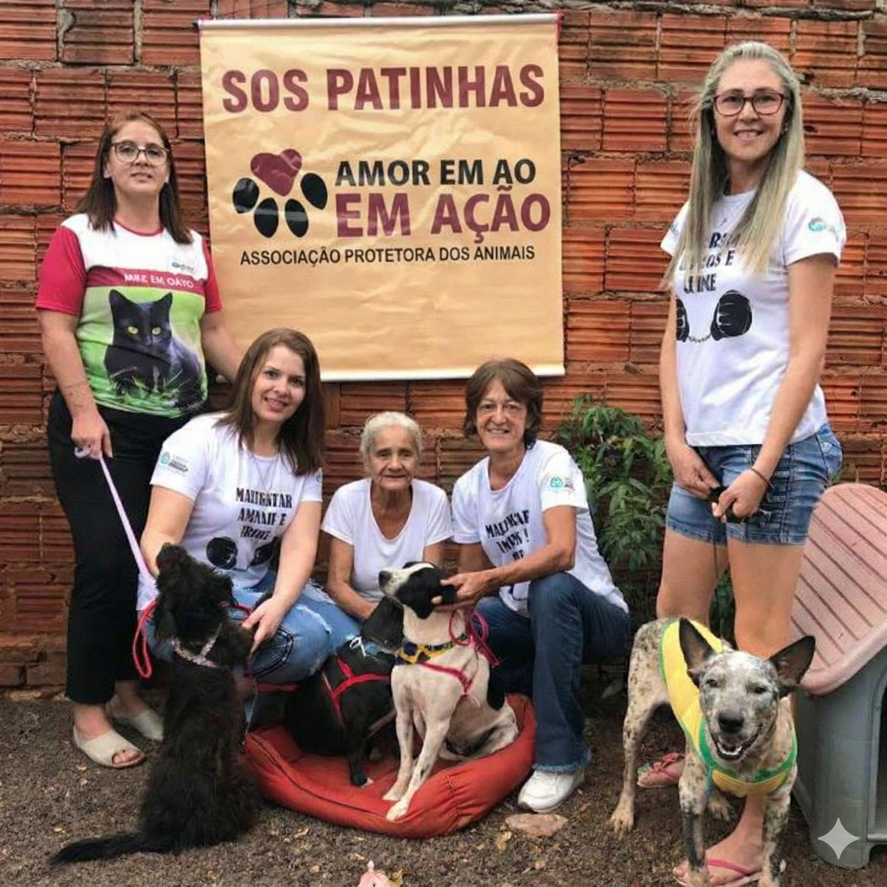

Ajude o Felix a Lutar Contra o Tumor Ósseo

S
SOS Patinhas
Doação protegida
A dona do Felix veio até o nosso abrigo com os olhos cheios de lágrimas, pedindo ajuda.
Ela descobriu que ele está com tumor ósseo, uma doença agressiva que causa dor intensa e avança rapidamente.
Ela ama o Felix, mas não tem condições de arcar sozinha com os custos do tratamento.
Nos últimos dias, ele tem sentido mais dor. Caminhar ficou difícil. Levantar exige esforço. E cada consulta veterinária traz novos exames, medicamentos e procedimentos urgentes para tentar controlar o avanço da doença.
O tratamento precisa começar imediatamente.
E os custos são altos.
Estamos unindo forças para dar ao Felix uma chance real de continuar lutando. Mas precisamos da sua ajuda.
Cada contribuição, não importa o valor, faz diferença direta:
✔ Exames
✔ Medicamentos
✔ Controle da dor
✔ Acompanhamento veterinário
O Felix não é apenas um gato. Ele é família. Ele confia na gente.
Se você puder contribuir, estará ajudando a aliviar a dor dele e dando esperança a uma tutora que só quer ver seu companheiro bem novamente.
Se não puder doar, compartilhe.
O tempo é decisivo quando falamos de tumor ósseo.
Vamos lutar pelo Felix juntos. 🐾💛
Quem Somos

Somos um grupo de voluntários do Espírito Santo dedicados ao resgate e cuidado de animais em situação de vulnerabilidade. Não temos apoio governamental — tudo é custeado por doações de pessoas como você.
Nossa missão é garantir alimentação, tratamento veterinário e um lar temporário seguro para cada animal que chega até nós, enquanto buscamos famílias adotantes responsáveis.